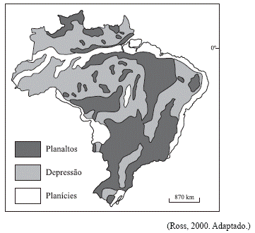

Questão 01
(UNIFESP 2009) Observe o mapa. Assinale a alternativa que contém as formas de relevo predominantes em cada porção do território brasileiro indicada, de acordo com a classificação de Ross.

a) Faixa litorânea: depressões.
b) Amazônia Legal: planícies.
c) Fronteira com o Mercosul: planaltos.
d) Região Sul: planícies.
e) Pantanal: planaltos.
Questão 02
(Fuvest) Analise as informações geológico-estruturais do quadro:

O item III corresponde à gênese
a) do Escudo Brasileiro.
b) da Depressão Periférica.
c) dos Dobramentos Terciários.
d) da Bacia do Paraná.
e) da Planície Amazônica.
Questão 03
"Não se pode jamais confundir o que é idade e gênese das formas com idade e gênese das estruturas. Se as estruturas e litologias são predominantemente antigas, o mesmo não se pode dizer das formas de relevo, que são muito mais recentes". (ROSS, Jurandir, 1990, p. 25).
A partir do comentário e da análise do relevo brasileiro, é CORRETO afirmar:
a) As estruturas geológicas que formam o arcabouço natural do território brasileiro pertencem ao período pré-cambriano, sendo exemplos de relevo deste período as serras da Mantiqueira e do Espinhaço.
b) A paisagem característica de mares de morros (elevações suavemente arredondadas), comum na Serra da Mantiqueira, testemunha a ausência do intemperismo no processo de formação do relevo.
c) O relevo brasileiro atual é fruto de um trabalho de modelagem realizado nos tempos recentes sobre um arcabouço geológico também recente, ambos da Era Cenozóica.
d) O caráter residual do modelado é muito marcante nos planaltos e serras de Goiás-Minas. Suas formas foram elaboradas ainda no período pré-cambriano e não sofreram grandes alterações em períodos posteriores.
Questão 04
(Fuvest 2011) Esta foto ilustra uma das formas do relevo brasileiro, que são as chapadas.

É correto afirmar que essa forma de relevo está
a) distribuída pelas regiões Norte e Centro-Oeste, em terrenos cristalinos, geralmente moldados pela ação do vento.
b) localizada no litoral da região Sul e decorre, em geral, da ação destrutiva da água do mar sobre rochas sedimentares.
c) concentrada no interior das regiões Sul e Sudeste e formou-se, na maior parte dos casos, a partir do intemperismo de rochas cristalinas.
d) restrita a trechos do litoral Norte-Nordeste, sendo resultante, sobretudo, da ação modeladora da chuva, em terrenos cristalinos.
e) presente nas regiões Centro-Oeste e Nordeste, tendo sua formação associada, principalmente, a processos erosivos em planaltos sedimentares.
Questão 05
A classificação do relevo brasileiro em grandes unidades, ou compartimentos, é uma síntese dos processos de construção e modelagem da superfície terrestre e das formas resultantes. Esta classificação distingue três tipos de compartimentos, que são:
a) Planaltos, Planícies e Dobramentos Modernos.
b) Escudos Cristalinos, Bacias Sedimentares e Dobramentos Modernos.
c) Planaltos, Planícies e Depressões.
d) Plataforma Continental, Talude Continental e Fossa Abissal.
e) Chapadas, Depressões e Bacias Sedimentares.
Questão 06
No território brasileiro,a ausência de cadeias montanhosas explica-se:
a) pela pouca atuação dos agentes externos de transformação do relevo.
b) pela ausência de dobramentos modernos.
c) pelas intensas atuações do tectonismo.
d) pelo escasseamento dos depósitos sedimentares.
e) pela intensiva ação humana sobre as áreas naturais.
Questão 07
Na década de 1980, o professor Jurandyr Ross, com base no Projeto RADAM Brasil, realizou uma nova classificação do relevo brasileiro baseado em três pilares: morfoestrutura, morfoescultura e morfoclimática. Nessa nova classificação, o Brasil foi dividido em 28 unidades de relevo, sendo que todas se enquadram em três tipos de relevos gerais.
São eles: a) planaltos, planícies e depressões.
b) serras,montanhas e cordilheiras.
c) escudos cristalinos, planaltos e planícies.
d) crátons, depressões e bacias oceânicas.
e) bacias sedimentares, crátons e cordilheiras.
Questão 08
Segundo Aziz Nacib Ab Saber, geógrafo, o relevo predominante no Brasil é:
a) Depressão Central.
b) Planícies e Terras Baixas.
c) Planalto Brasileiro.
d) Planície Costeira.
e) Planalto das Guianas.
Questão 09
A classificação de Aroldo de Azevedo reconhece apenas duas formas de relevo do território brasileiro: planalto e planície. Nesse sentido assinale a alternativa que contém, apenas, formas de planalto da superfície brasileira:
a) Planalto Brasileiro, Planalto das Guianas, Planalto do Pantanal.
b) Planalto Central, Planalto Atlântico, Planalto Amazônico e Planície Costeira.
c) Planalto Meridional, Planalto das Guianas, Planície do Pantanal e Planície Costeira.
d) Planalto Central, Planalto Atlântico, Planalto Meridional e Planalto das Guianas.
e) Planalto e Chapada dos Parecis, Planaltos Residuais Sul-Amazônicos, Planaltos e serras de Goiás-Minas e Planície do Pantanal.
Questão 10
Entre os principais geógrafos brasileiros, três realizaram importantes estudos e pesquisas sobre a classificação do relevo brasileiro. Sobre essas classificações, é correto afirmar que:
a) o geógrafo Aroldo de Azevedo empregou termos geomorfológicos para denominar as divisões gerais (planaltos e planícies) por meio de modernas técnicas, como sensoriamento remoto e imagens de satélites.
b) Jurandyr Ross, com base nos estudos de Aroldo Azevedo, propôs uma nova divisão do relevo brasileiro, utilizando o critério de altimetria e classificando, assim, o território brasileiro em oito unidades de relevo.
c) as pesquisas dos geógrafos citados acima, sobre o relevo brasileiro, têm em comum o uso das modernas técnicas cartográficas e do sensoriamento remoto, o que garantiu a essas pesquisas um levantamento preciso do relevo brasileiro.
d) Aziz Ab’Saber, utilizando o critério morfoclimático, explicou as formas de relevo pela ação do clima e ampliou a classificação de Aroldo Azevedo, acrescentando novas unidades ao relevo brasileiro.